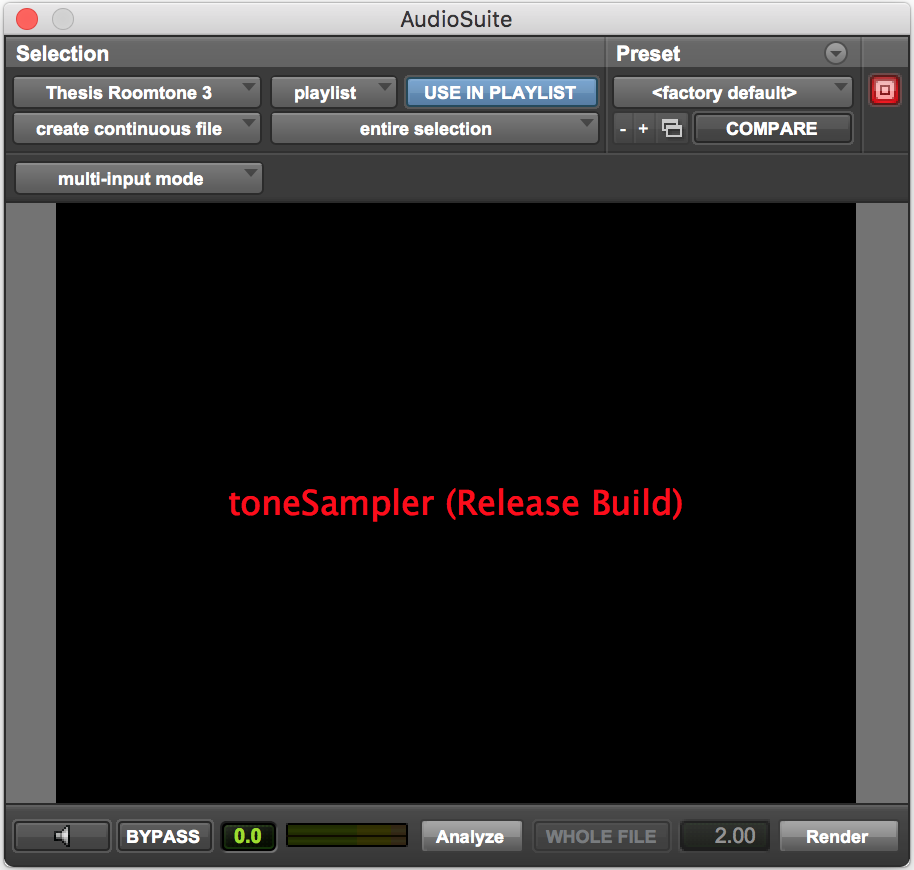

MAAT MtG - Mind The Gap
Multi-platform speech processing plugin
A dialog and speech plugin written in C++ and JUCE with Adam Shield. It is launched and for sale. Take a closer look on the MAAT website.
• Audio software developer
• Professional musician
• Film audio engineer
• General audio nerd
My favorite languages are C++ and Python, but I'm also fluent in English, Swedish, and Italian.
I am currently working at MAAT Digital as Lead Developer. If you have any questions about my work, please get in touch! Always happy to chat.
Before you read on, take a moment to make some noise using my web-based granular synthesizer.
Loading demo sample…
Waveform
I like to make music and audio editing software. My favorite programming language is C++, but I have also worked in Python, Javascript, and Max MSP. I am currently Lead Developer at MAAT Digital. To learn more about the cool plug-ins I work on, click here!
Multi-platform speech processing plugin
A dialog and speech plugin written in C++ and JUCE with Adam Shield. It is launched and for sale. Take a closer look on the MAAT website.

Room tone regeneration plugin for Pro Tools AudioSuite
My NYU thesis plugin. It samples a room and resynthesizes room tone so a dialogue editor does not have to loop a short noise bed. Still in alpha.
Max MSP chiptune instrument
An early standalone chiptune toy: an 8-bit synth, bitcrushed drums, and a small improv algorithm.
I'm no physicist, but I love to play around with circuits to make weird DIY instruments.
A spring reverb in a box my grandfather and I built, using an iPod speaker, a piezo, and pine-branch knobs.
A finger heart-rate sensor drives a synthesizer and step sequencer running on a Teensy.
Three pipes in a bucket. Max MSP feeds noise to speaker cones, and the pipes turn it into pitched percussion.
I consider music to be a key part of my identity. I'm a freelancing film composer, and have created original music for several YouTube series and podcasts, with a total of over three million views. Here are some of my favorite projects:
Solo music project
An album under the name Zonkey. I composed, recorded, and mixed it. Kerim Wilhelm mastered it at Corner Store Studios in Bushwick.
Immersive VR and 3D audio
A Unity VR video for a song from Half Ass, using the Oculus 3D audio algorithm. A headset makes it much better.
Jazzy hip hop band
A band with my closest friends. This is a live performance of a song I wrote called Bamsing.
Please feel free to get in touch! I'd love to hear from you, even if you're just looking to chat.
Or find me on the web:
Powered by w3.css